Om ejendommen
Kærbyvej 3 er et fritliggende rødstenshus i landsbyen Låstrup mellem Skals og Hjarbæk Fjord, indrettet med tre selvstændige boliglejemål: 3A i stueplan, 3B på første sal med skråvægge og altan, og 3C i to plan med stue og køkken i stueplan og værelser på første sal. Ejendommen har været i samme ejers portefølje siden 2013, er løbende vedligeholdt og har været fuldt udlejet med lange lejeforhold – lejeren i 3A har boet der siden 2015.
Ejendommen er et klassisk "småhus" i lejelovens forstand (under 7 lejemål), hvilket giver frihed til at fastsætte lejen efter det lejedes værdi ved genudlejning. Den nuværende gennemsnitsleje på ca. 522 kr./m²/år ligger under niveauet for tilsvarende lejligheder i området, så der er en dokumenterbar opside for en køber.
Det får du
- Tre boliglejemål: 3A 108 m², 3B 84 m², 3C 111 m² – alle udlejet
- Årlig leje 158.160 kr. ekskl. forbrug (202.560 kr. inkl. aconto)
- Lave driftsomkostninger: ejendomsskat, forsikring og fælles el udgør ca. 25.000 kr./år
- Nettoleje ca. 109.000 kr. efter normaliseret vedligehold
- Deposita på 39.539 kr. overtages
- Grund på 1.128 m² (matr. 6k) samt Kærbyvej 5, matr. 6ai (967 m²) med carport – samlet 2.095 m² grund
- Ingen tomgang i 2025; kun kortvarig genudlejning i 2024 (3C)
Godt at vide
- Sælger er Keldgaard Bolig ApS (CVR 32339220), som sælger ejendommen som led i en tilpasning af porteføljen. Handlen kan gennemføres som ejendomshandel eller efter aftale.
- Lejekontrakter, forbrugsregnskaber (Boligflow) og depositumsoversigt udleveres til seriøse købere.
- Ejendommen administreres i dag af ejer selv; en køber kan overtage administrationen eller lægge den hos en administrator (typisk 2.500–3.500 kr. pr. lejemål/år).
- Der er ikke udarbejdet energimærke eller tilstandsrapport til denne præsentation – se Fakta.
Lejemål og lejeindtægter
| Lejemål | Type | Areal | Lejer siden | Leje/md. | Aconto/md. | Leje/år | Kr./m²/år | Depositum |
|---|---|---|---|---|---|---|---|---|
| Kærbyvej 3A | Lejlighed, stueplan | 108 m² | 01.01.2015 | 5.100 | 1.350 | 61.200 | 567 | 15.300 |
| Kærbyvej 3B | Lejlighed, 1. sal, altan | 84 m² | 01.06.2022 | 3.690 | 1.050 | 44.280 | 527 | 11.069 |
| Kærbyvej 3C | Lejlighed i to plan (stue + 1. sal), altan | 111 m² | 01.12.2024 | 4.390 | 1.300 | 52.680 | 475 | 13.170 |
| I alt | 303 m² | 13.180 | 3.700 | 158.160 | 522 | 39.539 |
Lejen er ekskl. forbrug. Aconto dækker varme og vand og afregnes via forbrugsregnskab (Boligflow, regnskabsår 1. juli–30. juni). Alle tre lejemål er indgået efter 1. juli 2015 eller reguleret efter småhusreglerne. Kilde: lejerliste pr. 31.12.2025 og specifikation til Nykredit, okt. 2025.
Lejepotentiale
Lejligheder til leje i Skals annonceres i september 2026 til 560–950 kr./m²/år, typisk 700–900 kr./m² for 60–80 m² (BoligZonen, Lejebolig.dk, EDC). Kærbyvej 3 udlejes i dag til 475–567 kr./m². Ved genudlejning til et forsigtigt niveau på 650–700 kr./m² vil den samlede leje være 197.000–212.000 kr./år, dvs. 40.000–54.000 kr. mere end i dag. Da ejendommen er et småhus, kan lejen ved genudlejning fastsættes efter det lejedes værdi, og lejen i eksisterende lejemål kan varsles op til samme niveau efter lejelovens regler.
Driftsøkonomi
| Indtægter (2025-niveau) | kr./år |
|---|---|
| Husleje ekskl. forbrug | 158.160 |
| Tomgang (faktisk 2025) | 0 |
| Bruttoleje | 158.160 |
| Driftsudgifter | kr./år |
| Ejendomsskat (grundskyld, 2025) | 8.625 |
| Bygningsforsikring (Gjensidige, andel) | 7.208 |
| Varmeregnskab og fælles installationer | 6.726 |
| Fælles el (trappelys m.v.) | 2.600 |
| Øvrige driftsudgifter (2025, bogført) | 5.070 |
| Vedligehold, normaliseret (60 kr./m² × 315 m²) | 18.900 |
| Driftsudgifter i alt | 49.129 |
| Nettoleje før finansiering | 109.031 |
Sådan læses tallene
- Tallene stammer fra selskabets ejendomsark til årsrapporten 2025 (revideret af Beierholm) og specifikationen sendt til Nykredit i oktober 2025.
- Faktisk vedligehold i 2025 var 16.834 kr.; der er regnet med et normaliseret niveau på 18.900 kr. (60 kr./m²), som en køber bør budgettere med.
- Forbrug (varme, vand) betales af lejerne via aconto på 44.400 kr./år og indgår ikke i nettolejen.
- Administration er ikke medregnet, da ejendommen er ejer-administreret.
- Selskabet har bogført ejendommen til 1.450.000 kr. ultimo 2025 med et afkastkrav på 8,3 %.
Fakta
| Ejendom | |
|---|---|
| Adresse | Kærbyvej 3, 3A, 3B og 3C, Låstrup, 8832 Skals |
| Matrikel | 6k, V. Låstrup By, Låstrup – 1.128 m² (BFE 3460203) |
| Kærbyvej 5 | Matr. 6ai, V. Låstrup By – 967 m² (BFE 3460227) med carport fra 1980 (træ). Handles sammen med nr. 3. |
| Kommune | Viborg Kommune (791) |
| Ejendomstype | Flerfamiliehus / etageboligbebyggelse med 3 boligenheder (BBR) |
| Opførelsesår | 1938, om-/tilbygget 2009 (BBR) |
| Boligareal (BBR) | 303 m² fordelt på 3 enheder; bebygget areal 180 m², udnyttet tagetage 132 m²; bebyggelsesprocent 28 |
| Ydervæg / tag | Mursten / eternit bølgeplader (BBR angiver tagpap – bør rettes i BBR inden salg) |
| Varme | Centralvarme fra fælles gasfyr (naturgas, Evida) med fordeling via varmeregnskab (Boligflow) |
| Energimærke | Intet gyldigt energimærke registreret – skal udarbejdes inden udbud |
| Zonestatus | Kommuneplanramme LÅST.C2.01 "Blandet bolig og erhverv" (bebyggelsesprocent 40, maks. 1,5 etage / 8,5 m, vedtaget 21.05.2025). Ingen lokalplan. |
| Ejerforhold, vurdering og hæftelser | |
|---|---|
| Ejer | Keldgaard Bolig ApS, CVR 32339220 (skøde tinglyst 19.10.2013, overtagelse 01.01.2013) |
| Købesum 2013 | 1.385.000 kr. kontant |
| Offentlig vurdering (2020, nr. 3) | Ejendomsværdi 1.800.000 kr. · grundværdi 219.200 kr. |
| Offentlig vurdering (2020, nr. 5) | Ejendomsværdi 140.000 kr. · grundværdi 176.700 kr. |
| Ejendomsskat 2023 (nr. 3 + nr. 5) | 4.510 kr. + 3.828 kr. = 8.338 kr./år |
| Bogført dagsværdi ultimo 2025 | 1.450.000 kr. (afkastkrav 8,3 %) |
| Realkreditlån | Nykredit Realkredit, kontantlån hovedstol 1.013.000 kr. (2016), kan overtages efter aftale eller indfries |
| Servitutter | Landvæsenskommissionskendelse 1972 (vedr. 10, 13c); dok. om forsynings-/afløbsledninger 1998 |
| Bevaringsværdi / fredning | Ikke registreret som bevaringsværdig eller fredet |
Billeder
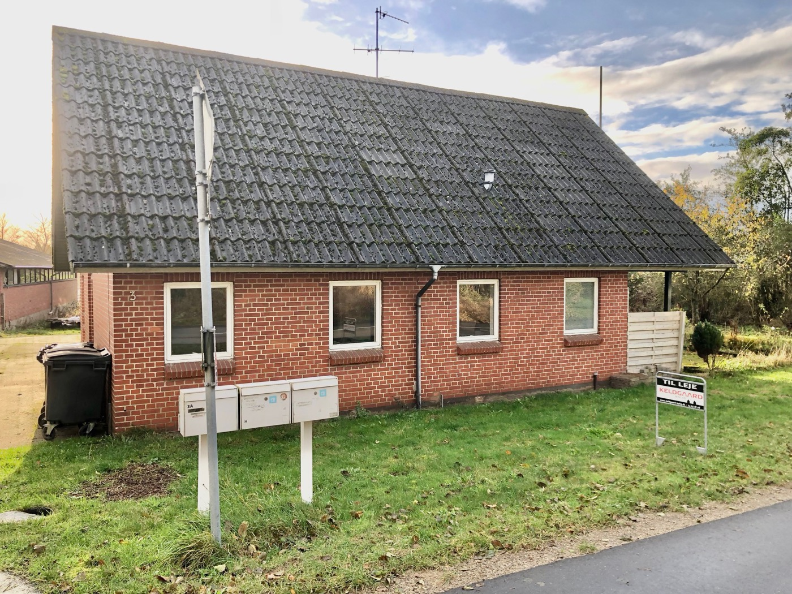
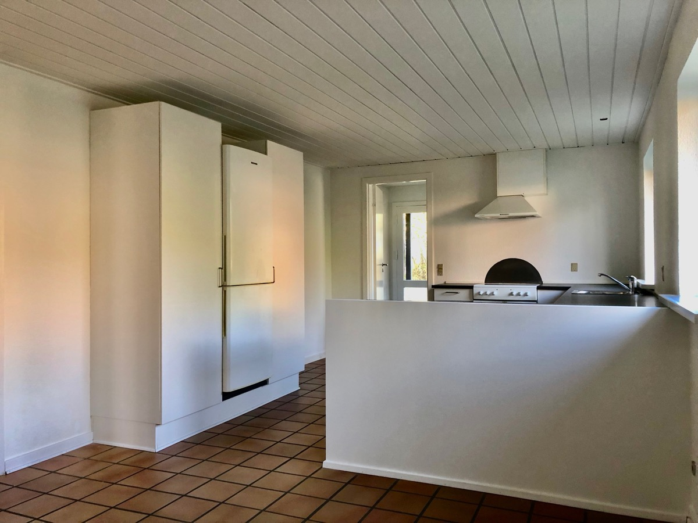
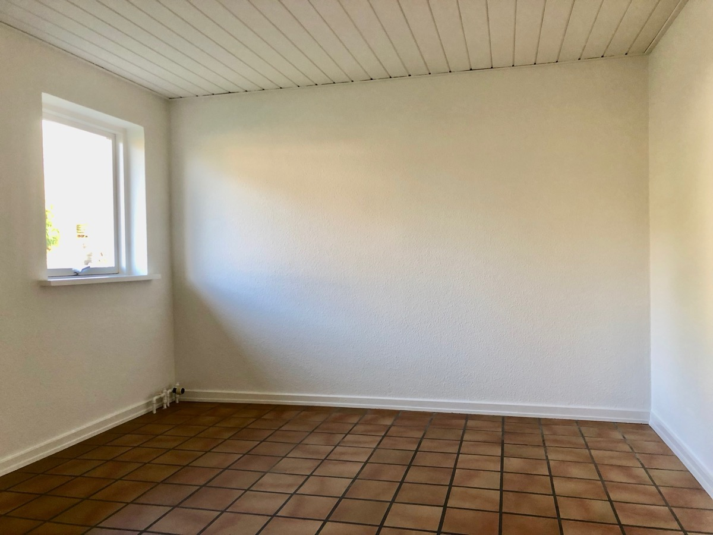
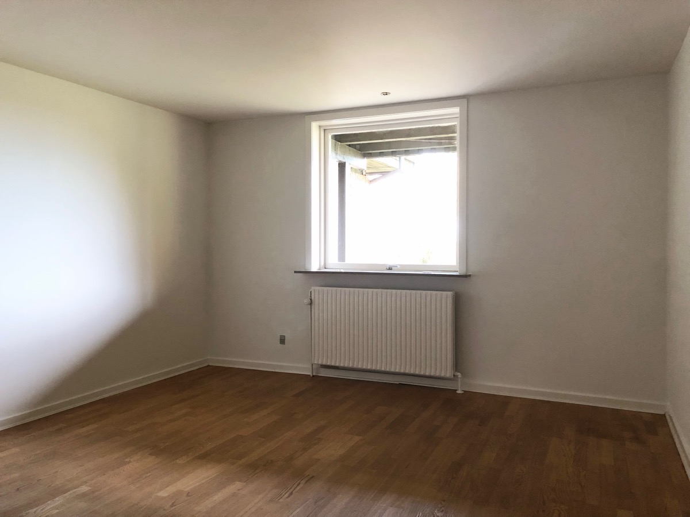
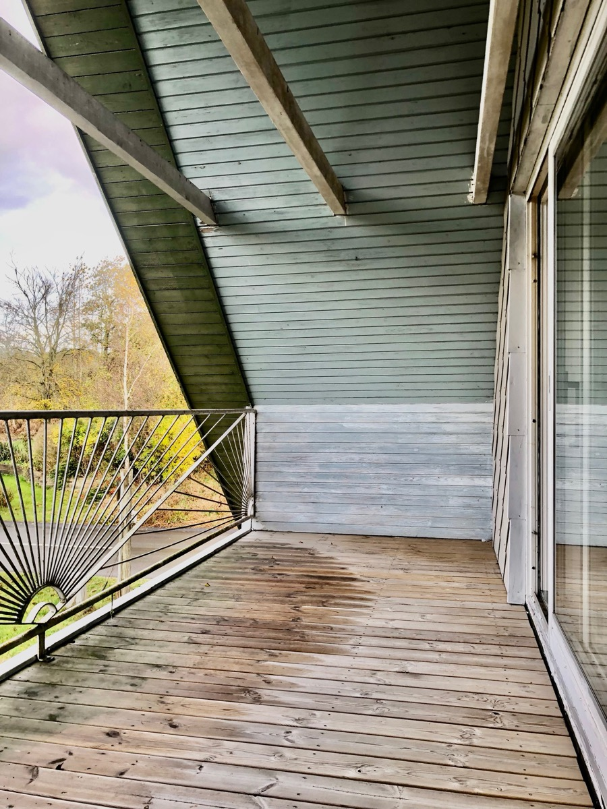
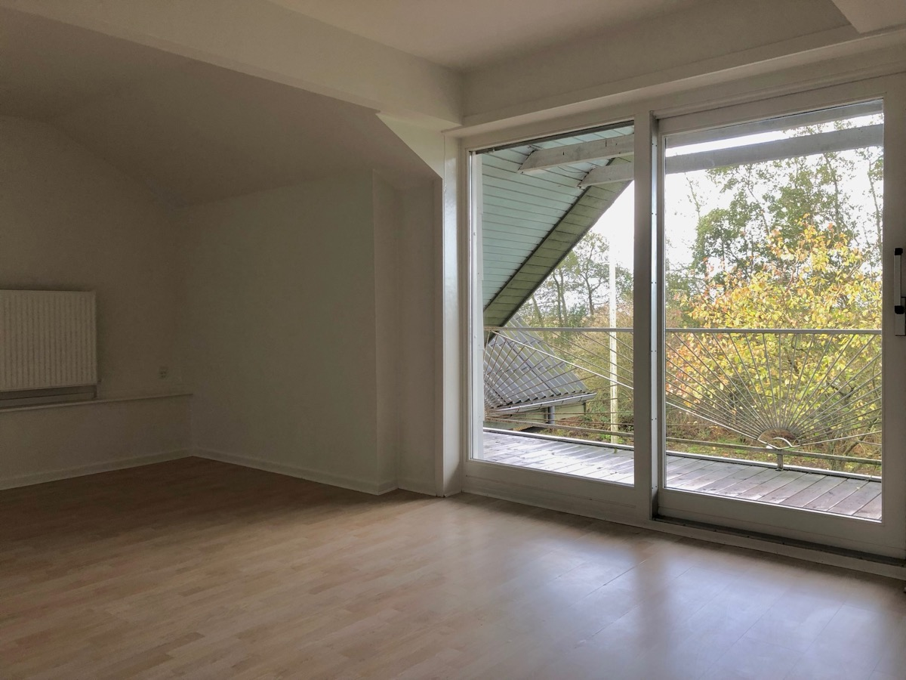
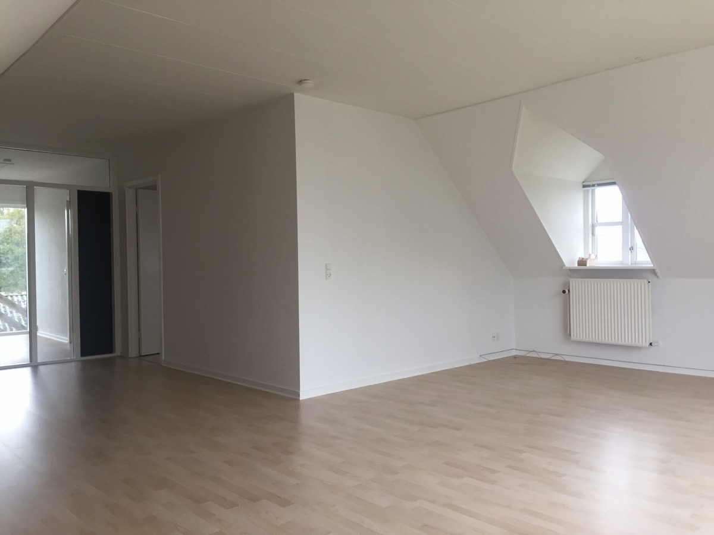
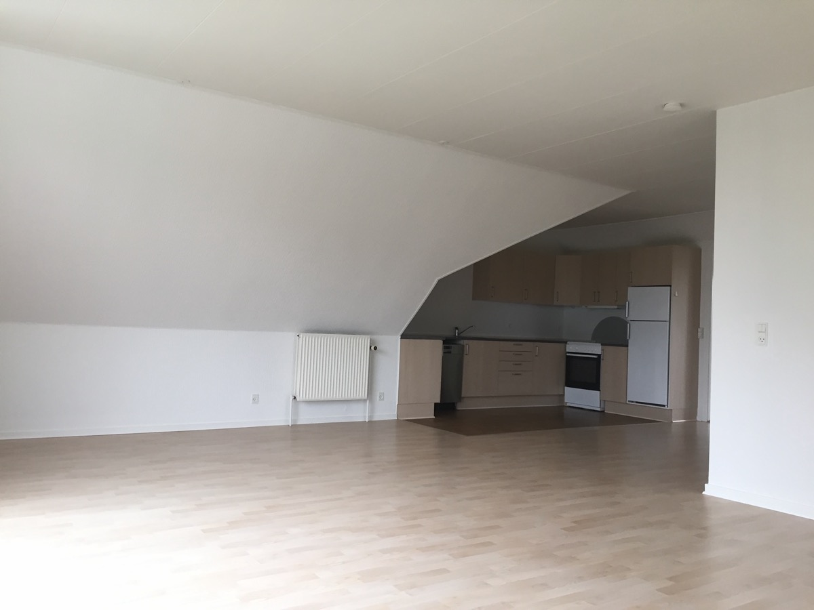
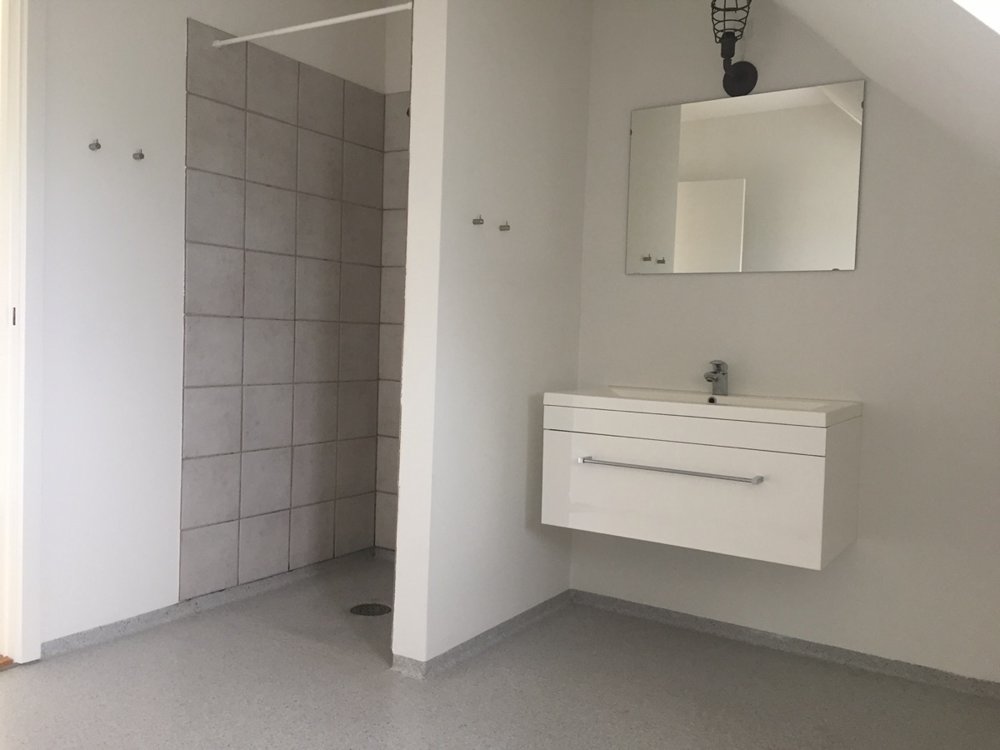
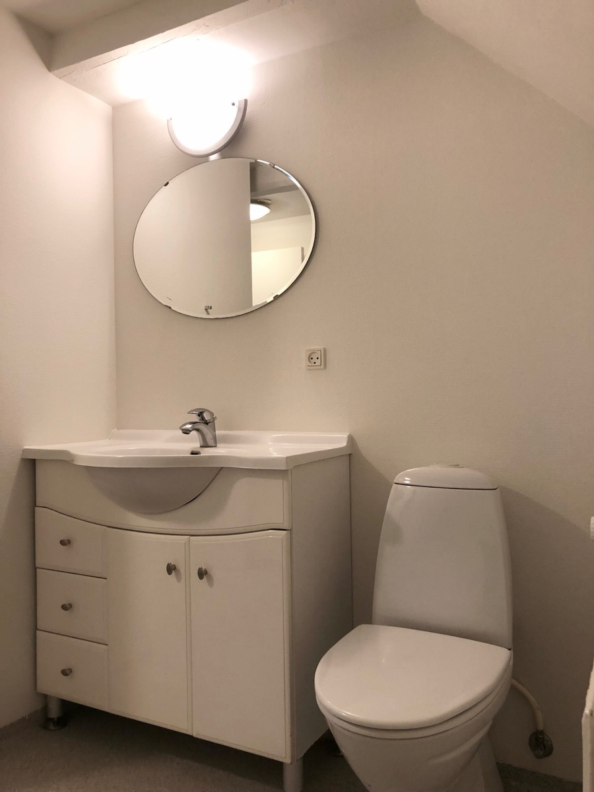
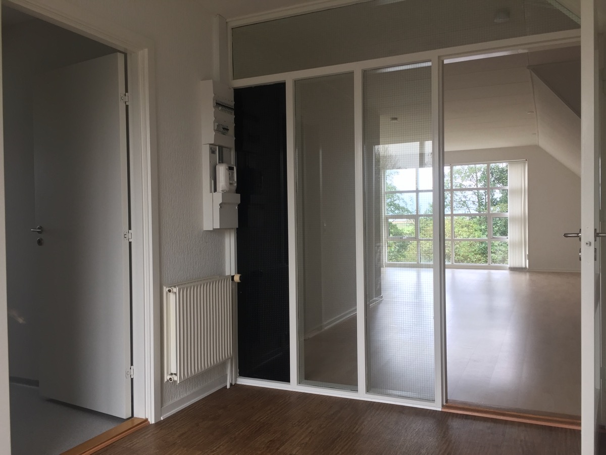
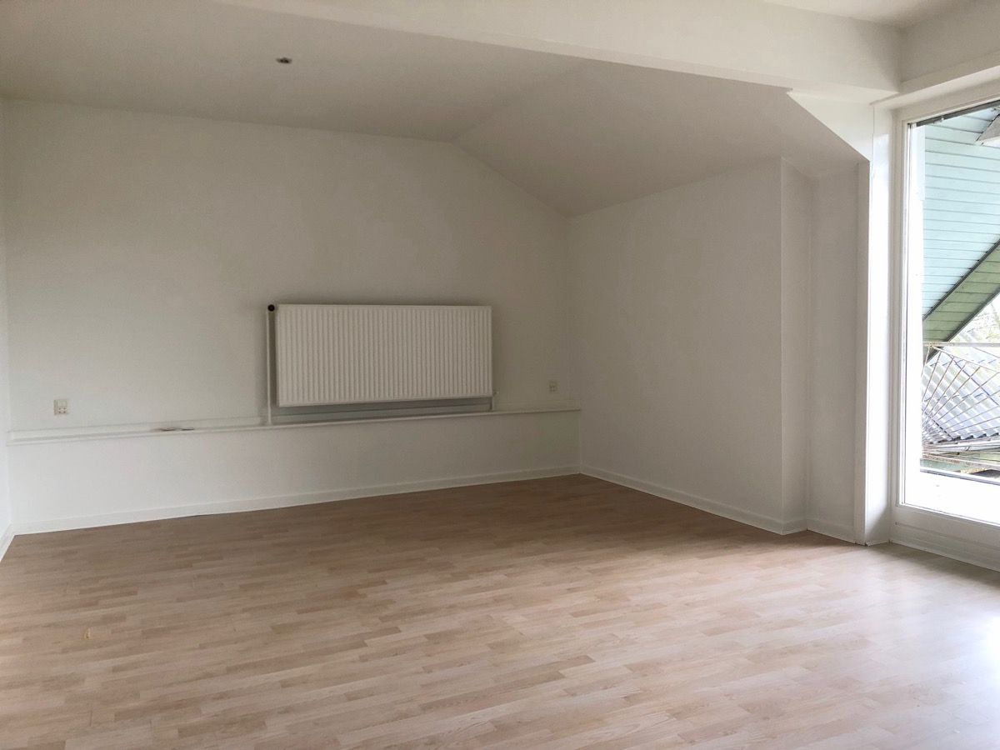
Billederne af 3B og 3C er taget ved genudlejning i oktober 2023. Der foreligger ikke billeder af 3A (beboet siden 2015). Nye fotos af facade og fællesarealer følger.
Området
Låstrup er en landsby med ca. 200 indbyggere på bakkerne ned mod Hjarbæk Fjord, 3 km fra Skals ad cykelsti og 13–15 km nord for Viborg. Skals (ca. 1.750 indbyggere) har skole til 9. klasse, efterskole, dagligvarebutikker, læge, hal og svømmehal, og bus 67 kører til Viborg på godt 20 minutter. Området tiltrækker lejere, der vil bo billigt og roligt med natur og fjord tæt på, men inden for pendlerafstand af Viborg.
| Afstande | km |
|---|---|
| Skals centrum (skole, indkøb, læge) | 3 km |
| Hjarbæk Fjord / Hjarbæk havn | ca. 4 km |
| Viborg centrum | ca. 14 km |
| Bus 67 mod Viborg | ca. 22 min |
| Himmerlandsstien (cykel-/vandrerute) | i Skals |
Koordinater 56.5749 N, 9.3768 Ø (DAWA). Skråfoto · Google Maps
Pris og afkast
Sådan er prisen fundet
Investeringsejendomme prissættes efter nettolejen og det afkast, en køber kræver. Nettolejen er her opgjort forsigtigt til 109.000 kr. med normaliseret vedligehold og uden administration. Afkastkravet er sat ud fra aktuelt udbudte boligudlejningsejendomme i Skals og Viborg samt investorstatistik for Viborg Kommune.
Lejehistorik 2013–2025 (selskabets ejendomsark)
| År | Årsleje, faktisk | Tomgang | Nettoleje | Bogført værdi (afkastkrav) |
|---|---|---|---|---|
| 2013 | – | – | 110.773 | 1.385.000 (8,0 %) |
| 2015 | 149.280 | 0 | – | 1.385.000 |
| 2016 | 152.328 | 0 | 103.388 | 1.385.000 (7,5 %) |
| 2017 | 153.672 | 0 | 104.288 | 1.385.000 |
| 2018 | 153.948 | 0 | 104.564 | – |
| 2019 | 155.713 | 5.700 | 107.675 | – |
| 2020 | 156.120 | 105 | – | – |
| 2021 | 156.792 | 0 | – | – |
| 2022 | 159.828 | 698 | – | – |
| 2023 | 160.788 | 480 | – | – |
| 2024 | 156.900 | 6.188 | 116.725 | 1.500.000 (8,2 %) |
| 2025 | 158.160 | 105 | 116.947 | 1.450.000 (8,3 %) |
| Nettoleje efter faktisk vedligehold, ekskl. administration. Tomgang summeret over 11 år: ca. 13.300 kr. = under 1 % af lejen. 3A har haft samme lejer siden 2015; 3B og 3C har haft henholdsvis 6 og 5 lejere siden 2015 med typisk 1–4 års lejeperioder og genudlejning inden for få uger. Kilde: ejendomsark og lejerlister 2013–2025. | ||||
Historikken viser en ejendom, der har leveret 103.000–117.000 kr. i nettoleje hvert år i mere end ti år uden nævneværdig tomgang, og hvor lejen er reguleret jævnt (ca. 0,6 % om året) frem for at være løftet til markedsniveau. Selskabet har selv værdiansat ejendommen til 1,385–1,5 mio. kr. i hele perioden med afkastkrav på 7,5–8,3 %, mens den offentlige vurdering fra 2020 er 1,8 mio. kr.
| Sammenlignelige udbud (sept. 2026) | Pris | Afkast |
|---|---|---|
| Gl. Skolevej 15, Skals – 2 lejemål, 264 m², 1909, energi C, leje 151.200 | 1.395.000 | 7,3 % |
| Koldingvej 100, Viborg – 2 lejemål, 149 m², 1924, energi E, leje 149.988 | 1.695.000 | 6,4 % |
| Hovedgaden 44A, Skals – 6 lejemål, 482 m², 1913/2011 (EDC, solgt) | 3.995.000 | 8.289 kr./m² |
| Boligudlejningsejendomme til salg i Viborg (Lokaleportalen, 8 stk.) | gns. 15.020 kr./m² | – |
| 1.-års afkast, Viborg Kommune (investejendomme.dk) | – | 5,8–8,4 % |
| Pris ved forskellige afkastkrav | Nuværende leje | Markedsleje (200.000 kr.) |
|---|---|---|
| 6,0 % | 1.817.000 | 2.514.000 |
| 6,5 % | 1.677.000 | 2.321.000 |
| 7,0 % | 1.558.000 | 2.155.000 |
| 7,5 % | 1.454.000 | 2.011.000 |
| 8,0 % | 1.363.000 | 1.886.000 |
| Nettoleje ved markedsleje: 200.000 – 49.000 = 151.000 kr. Prisen er nettoleje divideret med afkastkrav. | ||
Det trækker op
- Fuldt udlejet med tre stabile lejere og ingen tomgang i 2025; deposita på plads
- Ombygget i 2009 til tre selvstændige lejligheder med egne bad og køkken – lav vedligeholdelsesbyrde
- Leje 25–40 % under annonceret niveau i Skals – dokumenteret opside på 40–54.000 kr./år
- Lave faste omkostninger (ca. 25.000 kr./år ekskl. vedligehold)
- Pris pr. m² på ca. 5.300–5.900 kr. – langt under nyere udlejningsejendomme i Viborg (15.000 kr./m²)
- Realkreditlån i Nykredit kan eventuelt overtages
Det trækker ned
- Landsbybeliggenhed 3 km fra Skals – mindre lejerefterspørgsel end i Skals og Viborg
- Ejendom fra 1938 med eternittag og gasfyr, intet energimærke og ingen tilstandsrapport – en køber vil indregne fremtidig varmekonvertering
- Investorer i Viborg Kommune kræver typisk 6,5–8 % i startafkast – lejeopsiden skal realiseres af køber
- Små lejemål betyder relativt højere omkostning pr. lejerskifte
- Boligmarkedet i Viborg Kommune er fladt i 2025–26
Konklusion
Ved den nuværende leje giver udbudsprisen på 1.795.000 kr. et startafkast på 6,1 %, og en handel omkring 1.600.000 kr. giver 6,8 %. Det ligger mellem de to aktuelt udbudte ejendomme i Skals og Viborg (6,4 og 7,3 %) og afspejler, at Kærbyvej 3 er nyere ombygget end begge, men ligger i en landsby. Realiserer køber en leje på 650–700 kr./m², stiger afkastet til 9–9,5 % på handelsprisen, hvilket er argumentet for at holde fast i intervallet 1,55–1,7 mio. kr. i forhandlingen. Selskabets egen bogførte værdi på 1.450.000 kr. (afkastkrav 8,3 %) er gulvet.
Forbehold: Prisvurderingen er sælgers eget skøn pr. 21. september 2026 på baggrund af offentlige udbud og selskabets regnskabstal. Faktiske handelspriser på flerfamiliehuse i 8832 Skals har ikke kunnet findes i de offentlige registre. Energimærke, tilstand og finansieringsvilkår kan flytte prisen begge veje.
Kilder og dokumentation
Sælgers dokumenter
- Tingbogsattest 07.04.2025 (adkomst, hæftelser, servitutter)
- Lejerliste pr. 31.12.2025 og depositumliste (Boligflow)
- Ejendomsark / dagsværdiopgørelse 2025 (revideret, Beierholm)
- Specifikationsskema boligudlejningsejendomme til Nykredit, okt. 2025
- Likviditetsbudget 2025 og 2026, Keldgaard Bolig ApS
- Salgsmateriale udarbejdet til Nybolig Viborg 2023–24 (lejeoversigt, fotos 3B/3C)
- Forsikringspolice Gjensidige 4881611 (via Söderberg & Partners), 2026
Offentlige datakilder
- DAWA – adresser, matrikler 6k og 6ai, BFE-numre, koordinater, 21.09.2026
- BBR via Resights.dk (opførelsesår, arealer, materialer), 21.09.2026
- Offentlig vurdering 2020 og ejendomsskat 2023 (Resights / tingbogsattest)
- Plandata.dk WFS – kommuneplanramme LÅST.C2.01, lokalplaner
- EDC Erhverv, Ejendomstorvet.dk, Lokaleportalen.dk, investejendomme.dk – udbud og afkast, sept. 2026
- BoligZonen, Lejebolig.dk, Akutbolig, EDC – lejeboliger i 8832 Skals, sept. 2026
- Finans Danmark BM010 (Viborg Kommune) · Bolius huspriser · Vores By Viborg
- Fjordklyngen.dk (Låstrup) · Wikipedia (Skals) · OpenStreetMap · Dataforsyningen skråfoto